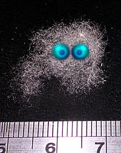

Pelusilla del ombligo
 De: La Frikipedia, la enciclopedia extremadamente seria.
De: La Frikipedia, la enciclopedia extremadamente seria.
La pelusilla del ombligo es la acumulación de fibras sueltas en el ombligo. Bien sabido es por los varones de ombligo peludo, que al paso del día y el roce de la tela con los vellos, se engendra allí una suave y tierna pelusa. Para muchas mujeres es algo asqueroso y repugnante que misteriosamente llega allí, aducen entonces que eso es el recuerdo dejado por alguna amante o que cualquier explicación de su existencia es insuficiente, desconfiar del ombligo es mejor que darle cariño.
Uso en la industria textil
Graham Barker, de Perth (Australia), está en el libro Guinness de Récords por acumular la mayor cantidad de pelusa umbilical. Ha estado coleccionando su propia pelusilla casi todos los días desde el 17 de enero de 1984, y produce alrededor de 3,03 mg cada día. Al contrario de lo que dice el estudio del doctor Kruszelnicki, su pelusa tiene un tono más bien rojizo, a pesar de que no suele llevar ropa roja.
Un chalado, vamos. Lo que no saben los del Guinness, que padecen de cierta demencia debido al abuso del brebaje al que nombraron con su apellido, es que en Cataluña, habida cuenta de su aversión a desprenderse de europeos (cucas, pelas, pasta, mony, perras, patacones, leuros, oros, sestercios...) alcanzaron su status como motor económico de España cuando descubrieron, allá por el siglo VIII, que para hacer ropa lo mejor no era la lana de las churras ni de las merinas, sino las pelusillas. Es sabido que los productos escasos, como la seda, son mejores. También pasa así con las drogas, con Ronaldinho, y las tetas grandes naturales en mujeres no obesas.
Para trenzar adecuadamente las fibras tuvieron que esclavizar a los hobbits, ya que sus pequeños dedos eran ideales para desenmarañar los capullos de hilillos, ya que si no se hace adecuadamente se vuelven como de plastilina y al estirarse desaparecen (este hecho científico es uno de los estudios que avalaron la gestión de la catástrofe del Prestige).
El descubrimiento de la ropa de los chinos, que aunque es una mierda es barata (con el consiguiente ahorro de dineuro, cuyo flujo se reconduce a drogas, alcohol y furbo), provocó la desaparición de la ancestral labor de desenmarañamiento, lo cual, por la simple regla de la oferta y la demanda, provocó la extinción de la raza de los hobbits. Para que lo sepas, en El Señor de los Anillos los hobbits eran actores cuyas imágenes fueron trucadas en post-producción, porque por culpa de los bazares chinos se han extinguido.
Desaparecido el negocio de las pelusillas, como ya nadie compra esos maravillosos ovillos, la gente en general los tira a la basura. Excepto ese pringado...
Mitos y verdades de la pelusa de ombligo
Lo que puede pasar si no te quitas la pelusa del ombligo
Es cierto que
- Se hacen solas, uno no es tan ocioso de sentarse en su oficina a hilar porquerías y luego guardarlas en el ombligo.
- Son de hilo con un decorado esporádico de vello púbico, el hilo por lo general, para que una pelusa sea carnudita, debe ser casi todo de algodón o lana, otras fibras sintéticas no producen pelusa.
- Si los hábitos de higiene umbilical son pobres, la pelusa además viene con aroma a queso parmesano, jamón serrano, algarroba, orines o frijoles.
- En cuanto a si el desaseo le da sabor... seguramente, pueden aportar además sus experiencias saboreando pelusas de ombligo.
- En True Lies, protagonizada por Arnold "Chuasneguer" (escríbanlo como les parezca), un sujeto que pretende ser espía para conquistar mujeres, concluye ser pelusa de ombligo. Dice "soy pelusa de ombligo" y se mea del susto, les recomiendo la película.
Es falso que
- Tener pelusa en el ombligo es señal de infidelidad de pareja, ¿acaso hay alguna mujer que haga pelusitas y se las dé a guardar en el ombligo de uno?
- La ausencia de pelusa es señal de infidelidad de pareja, recuerden que no toda fibra produce pelusa. Claro, si tu novia te pilló sin pelusa en la noche y usabas camiseta de algodón, hay que recurrir a argumentos distractores como "es que me requisó la policía y me dio pena, entonces me quité la pelusa en el proceso", o si se ocurre algo más convincente, mejor.
- La pelusa en el ombligo es un síntoma ineludible de desaseo... no señor, por el contrario, mientras más pulcro sea uno, siempre y cuando tenga ombligo peludo, más fácil se forma la pelusa, pues el ombligo es como una piscinita vacía dispuesta a ser llenada con pelusas, si se tratara de un ombligo mugroso, no habría espacio para las pelusas, más bien se produciría algo así como un quiste adiposo y palpitante de pecueca umbilical... ah, y hay mujeres que también incuban pelusas en sus ombliguitos...
 Las pelusas también sienten
¿Qué utilidad le puedo dar a una pelusa de ombligo?
Bien, mucha gente cree que es un simple desecho o excreción corporal, pero no imaginan cómo desaprovechan semejante adminículo.
- Sirve como tierno obsequio para la novia, sólo se debe agregar a la hora de entregarlo una frase como "pimpolla... esta es una semilla de ternura para ti". Eso sí, que ella no vea dónde se incuban esas semillas.
- Sirve para calar un caldito de pollo.
- Sirve como señuelo para pesca (en serio). Los peces no notan la diferencia entre un carnoso insecto y tu pelusa, es gratis... y si viene hedionda, mejor.
- Sirve como evidencia del movimiento de todo el día, cuando más robusta la pelusa, más caminaste.
- Sirve para estimular el epiglotis de tu compañero de clase que bosteza... directo a la garganta y seguro se le va el sueño.
- Sirve en emergencias, por ejemplo, si tienes una uña del pie encarnada y purulenta, la pelusa se mete bajo la uña y libera un poco la presión y el dolor, ojo, aquí las pelusas hediondas son contraproducentes.
- Una prestigiosa psicóloga recomienda la pelusa de ombligo como reemplazo a la bolita de moco, además, si te pillan amasando una pelusa, no pasarás la vergüenza de tener un moco en la punta de tu dedo.
- Permitir que tu pareja o tus hijos saquen tu pelusa del ombligo, es un gran voto de confianza y estrecha los vínculos interpersonales, eso sí, verifica primero que no hieda a queso, frijoles, pecueca o demás, pues arriesgas perder el poco respeto que queda.
- Hay quienes además minuciosamente se dedican a coleccionar pelusas, diariamente cosechan la suya y literalmente la envasan, hay otros más atrevidos que cosechan pelusas ajenas... y las envasan. La gracia de esta colección no es coleccionar en sí, sino dejar que los amigos que no saben el contenido del frasco exploren, destapen y huelan.
Autor(es):
- Jotape
- Epikurolibre
- El Samo 2
- Cibercrank
- AlemanH
- ArreKarallo
- Prototype
- Veni Vidi Vici
- Dark temptation
- Ricardoxxxlo
Frikipedia 2005-2016, Licencia
GFDL 1.2 - Extraído por FrikiLeaks